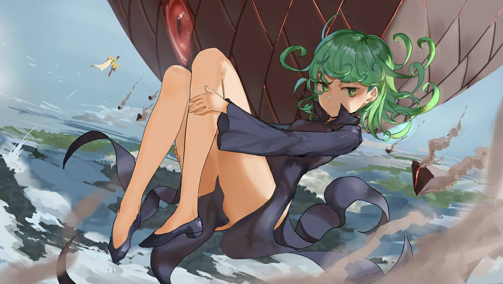

| 首页 | 创作背景 | 剧情简介 | 角色介绍 | 评价 |
埼玉
英雄名：秃头披风侠、老师（杰诺斯专属） 本作主人公，英雄排名C级第388位（最后一名）→C级第342位→C级第5位→C级第2位→升至B级第63位→升至B级第33位→升至B级第7位2位1位→已升至A级39位（25岁，非常关心周末超市的特卖）。 灯泡一样的光头是其招牌标志，喜欢穿着带斗篷的黄色制服。乍看上去好像打酱油的角色，但实际上却是超人中的超人。由于攻击力太强，常常一出手就搞定对手，正如漫画名称一样是名符其实的“一拳超人”。同时其身体耐受性极强，或者说身体结构已经彻底超出生物极限，其遭遇的所有敌人的所有打击对其都未曾对他造成伤害（唯一能让他受伤的是一只普通的猫），哪怕被硬生生踢上月球上，一样可以在太空中自由的活动，并且安然返回地球。除此之外，在动态视力、反射神经、跳跃能力等方面也拥有超群的能力，由于其能力水平和其他人相比完全不在同一个层面上，导致直到暗物质海盗团出现为止少有对其战斗画面的描写。 对于其超群的能力，进化之家的基奈斯博士（英文GENUS，有“物种”之意）的解释是“虽然只是个过着平凡生活，带有普通体质的普通人，但却通过不懈的努力以及挑战生命极限的战斗而突破界限之门，打破物种应有的界限器的特例”，具体情况不明。 在遇到弟子杰诺斯之前3年时间内，在兴趣使然下做了一段时间的个人英雄，却发现并不为世人所接受，于是参加了英雄协会的英雄考试，决意成为正式的英雄。在体力测试中展现了其超群的能力，大幅度打破了现有记录。但笔试和作文却不尽人意，最终以勉强及格C级最后一名的成绩达成目标成为正式登记在册的英雄。 性格上给人的感觉是松松垮垮，但实际上却是个热血男儿（参见原作中教育“暴风雪”何为英雄那一集)。在战斗中也是看上去兴味索然的样子，但一旦投入到战斗中后，比任何人都迅捷而有效的搞定对手。即使是其他英雄无法对抗的超级怪人也能轻松搞定，常常因为无法体验战斗的激情而神伤。另一方面，由于不太介意英雄排名所以很少自我展示，导致知道其真实实力的人少之又少。 对付大部分敌人都只用“普通拳”、“连续普通拳”或者“双手连续普通拳”就可以轻松搞定。必杀技是“认真系列”，已知的有“认真殴打”“认真折返跳”“认真抛台”“认真头槌”“认真掀桌”。 另外根据YJ番外2篇中，根据童帝制作的肉体强度测量仪丑女人面具设定推测其检测肉体强度为9999+，但却被童帝误认为是运动量不足的普通人（而且童帝的肉体强度测量道具丑女人面具也出现崩裂的迹象） 公式书数据（协会眼中）：体力10 智力1 正义感1 持久力10 爆发力10 人气1 战绩3 格斗力？ 杰诺斯眼中：体力999+ 智力4 正义感999+ 持久力999+ 爆发力999+ 人气1 战绩999+ 格斗力999+
杰诺斯
英雄名：魔鬼改造人 英雄排名S级第17位→14位，由库斯诺博士（日语クセーノ：有“好臭”之意？)改造的半机械人，现年19岁，真名不详。 又被称作正义的金发电子人。15岁时家园被一名狂乱半机械人毁灭，为报仇雪恨在库斯诺博士的帮助下完成了自身的半机械化殖装。4年后在和蚊女的战斗中被埼玉救下，对超强的埼玉无限憧憬，希望成为其入室弟子。在英雄考试中凭借满分的优异成绩（是英雄协会近两年来唯一一名满分获得者）被认定为S级英雄后，终于夙愿得偿成为埼玉的徒弟。 外形俊朗，颇受大众喜欢。但由于总在关键时刻松懈大意，往往在战斗中会被对手打成残缺不全的样子，不过由于是半机械人，只要换过零件就可以恢复。在言论方面有时候不太顾及对方的感受（即使对方是年长者），但惟独对埼玉奉若神明尊称其为“老师”。 平时住在老师家里 充当着人妻的角色（刷马桶 洗碗 买菜）十分讨厌音速的索尼克 战斗能力方面，各项指标比较均衡，移动速度很快，同时还拥有大范围攻击技能“烧毁炮”和连续攻击技能“机关枪扫射拳”。因其战斗风格硬朗，勇敢无畏而被称之为“魔鬼改造人”（又译魔鬼电子人）。 公式书数据：体力9 智力7 正义感7 持久力9 爆发力8 人气8 战绩6 机械力9
战栗的龙卷
 英雄排名S级第2位，28岁，身穿黑色长衫的萝莉脸大姐。超能力者，拥有一头绿色的卷发。地狱吹雪（B级第一位）的姐姐。本名为“龙卷”。 在原作中截止第87集为止，由于排名第一的爆破从未出现过，而被协会推崇为最终武器。普通的攻击基本无法接触到其本体，和其他英雄不同，擅长使用念动力进行远距离攻击，实力远胜普通龙级怪人，在波罗斯篇中，轻松把足以毁灭一个城市的外星炮弹反弹回去。而在饿狼篇中，为了把怪人协会BOSS从地下一千五百米深处赶出，使用念动力将整个怪人协会本部从地下扯出（琦玉的家因为距离较近，被连带着摧毁掉了）。由原作101集中得知，其幼年时期就有强大的超能力，自小被囚禁在某组织内部进行不人道的研究，在组织内发生怪人暴走事件时被抛弃，因此认为人与人之间的交流联系是无价值的行为，对他人极其不信任。对其亲生妹妹（地狱吹雪）有着近乎扭曲的保护欲。 战绩： vs杰诺斯 胜（一招搞定） vs怪人协会 平手（将众怪人的攻击全部轻松挡下，但是却被赛克斯钻了空子，击中脑部倒下，但是靠着超能力护盾维持） vs饿狼 败 （将饿狼控制住，后被饿狼习惯超能力，由于超能力使用过度倒下） 公式书数据：体力5 智力7 正义感7 持久力8 爆发力9 人气9 战绩10 超能力10
银色獠牙
本名为"邦古"(邦古(BANGU)在日文里和獠牙(FANGU)只差一个音)。 英雄排名S级第3位（刚出道时是B级第77位）。性格温厚，流水岩碎拳的宗师级。 以尽可能不伤及对方性命为宗旨，但是认真起来可以将龙级怪人秒杀。教导出了包括饿狼在内的众多优秀弟子。是为数不多的了解埼玉真实实力的人之一。 后在埼玉家吃过火锅。 战绩： vs饿狼 胜 （将饿狼驱逐出武馆） vs梅鲁扎嘎鲁多 胜 （与原子武士 性感囚犯 金属球棒合力击败） vs饿狼 没有结果 （被三位鬼级怪人打断） vs养太大的斑点狗 没有结果 （邦古在战斗的时候说道：“这只狗就不能乖乖坐下吗？”然后狗就坐下了） vs丑陋大总统 胜 （贯穿身体秒杀） vs牙龈 胜 （将嘴部切开秒杀） vs黑色精子 没有结果 （将黑色精子数个分裂体干掉） vsHomeless帝 败 （被黑色精子影响后被homeless帝的光球击中昏迷） 公式书数据：体力9 智力6 正义感7 持久力9 爆发力10 人气7 战绩9 格斗力9
性感囚犯
英雄排名S级最后一位 英雄名直译为：肌肉有弹性或身材丰满的囚犯。 英雄排名S级16→17位。基佬一只，与超合金黑光是朋友。因为喜欢推倒美男而被判无期徒刑（虽然是英雄），被关在监狱中。 战绩： vs深海王 败 （与深海王交战数个回合后被秒） vs梅鲁扎嘎鲁多 胜 （与金属球棒，银色獠牙，原子武士合力击败） vs饿狼 败（被一击秒杀） vs饿狼 败 （一拳击打饿狼但手反而断掉） 公式书数据：体力8 智力4 正义感6 持久力8 爆发力7 人气7 战绩8 格斗力8
帅哥假面甜心假面
A级第1位。真名不详。身体具有很强的再生能力，猜测身体受过改造，拥有晋升S级英雄的实力，但为了不让虾兵蟹将也轻松成为S级英雄而故意留在A级（原作中他自己对为何留在A级而进行的解释）。杰诺斯猜测此人受过一定心理创伤，对怪人疾恶如仇。尤其厌恶丑陋的东西，看到极度丑陋的丑八怪会动弹不得。 战绩： vs波罗斯手下 胜 （轻松秒杀） vs原始人王八 胜 （轻松完虐） vs女神眼镜 胜 （对方招式对其无效，之后轻松秒杀） vs丑陋大总统 败（因看到丑陋的东西就无法动弹的特点而落败） vs黑色精子 没有结果 （被龙卷打断） vs饿狼 败 （攻击被龙卷定身的饿狼无效，被饿狼适应超能力后一击秒杀） 公式书数据：体力8 智力7 正义感8 持久力7 爆发力8 人气10 战绩9 格斗力7
地狱的吹雪
B级第1位，现年23岁，真名不详。通身黑色外套留波波头的身材姣好的御姐。战栗的龙卷风之妹。也译作“地狱的暴风雪”。 由于远不及其姐而导致心理阴影。为了超越喜好单独行动姐姐，故意不升到A级而是一直把守着B级第1名的位置，是因为这是人生中的第一个第一，本身实力应该能达到A级的6位左右（自称），并集结大量B级排名者组成“暴风雪组”；对于拒绝加入的人则施以打击使之无法继续作为英雄进行活动。学生时代曾组建“异能研究会”并任会长。因不同意身为副会长塞尔克斯（日语サイコス有“精神病/Psychosis”之意）所提出的“举异能研究会之力消灭全人类的计划”而将其能力封印，并绝交。在怪人协会篇里，和成为怪人协会会长的塞尔克斯再度对决。 必杀技是专门对付超能力者的“念流旋转风暴”。但殊不知其姐姐龙卷凭藉著天赋自小便无意识地使用这个高难度的技巧。 试图说服主角进入其组织无果，结果还被卷入了主角和音速索尼克的乱战中。之后一直将主角家作为根据地。 童帝检测其肉体强度为19，比C级英雄的平均肉体强度还差。（但因为之前检测老师时丑女人面具有崩裂现象，所以19这个肉体强度可能并不准确） 战绩： vs琦玉 没有结果 （单方面地攻击琦玉但是没有效果，后被索尼克和杰诺斯打断） vs养太大的斑点狗 没有结果 （与邦古，邦普，杰诺斯联手对抗，后邦古无意中说了句：“就不能乖乖坐会儿吗。”，然后狗就坐下了。） vs赛克斯 胜 （因为与赛克斯是熟人，利用其弱点和专门对付超能力者的“念流旋转风暴”击败之） 公式书数据：体力5 智力7 正义感5 持久力5 爆发力6 人气8 战绩7 超能力7
音速的索尼克
出身忍者之国，25岁。有不分善恶之嫌。自称“最强的忍者”眼眶下方涂有迷彩俨然一派忍者的风范。 名字直译为：“音速的音速”，曾被杰诺斯吐槽其名字起得绕口。 人如其名以速度见长，除埼玉以外是现阶段速度最快的角色之一。战斗能力十分出众，暴风雪评价其“单从战斗技巧来看应属S级之列”，和杰诺斯也可以打成平手。沉浸于自己的招式之中，有时会露出诡异的笑容。在击溃桃源团头领后误将埼玉认作桃源团残兵而出手攻击，结果埼玉完全没把他当回事--伸了伸手就搞定了（具体情节请参照原著）。将埼玉当做劲敌。不断挑衅埼玉，妄图一雪前耻。 必杀技有“风刃脚(与闪光的佛莱士相同的招式)”，“爆裂飞镖”，“杀戮乱阵”，“四影葬之闪散斩”等，为了打倒埼玉还特地修炼了“四影葬”的升级版--“十影葬”的绝招。
基诺斯博士
“进化之家”的创始人，天才科学家。实际年龄已经超过70岁，但通过人工进化技术返老还童，而且克隆了多个本体以防不测，并研制了包括阿修罗独角仙和僵尸超人在内的众多强力怪人。被埼玉打败后开了家章鱼烧店。 认为生物都有神设定的限制，一直在研究突破这种生物的极限，震惊于埼玉以一介普通人的资质通过努力突破了极限，由此感到自己的研究没有意义。 认为突破极限需要付出代价，埼玉的代价就是失去头发以及无止境的寂寞感。
库斯诺博士
将杰诺斯改造为半机械人的天才科学家。原作中以一位老人的形象出场，对杰诺斯进行了二次改造，大幅度提升了其性能，并劝说杰诺斯理性报仇。
饿狼
邦古道场原首席弟子，因乱来打跑了所有道场弟子而被邦古逐出师门。自幼便饱受同侪欺负，憧憬英雄动画中的怪人形象而立志成为人类怪人，被逐出师门後发起英雄狩猎，挑战任何等级的英雄。 在重制版中击败了背心尊者（熟悉其攻击方式后将其秒杀），险胜金属球棒（金属球棒因为妹妹的原因没有继续与饿狼缠斗而昏倒），惨败于警犬侠（饿狼在速度与力量方面远不及警犬侠，且本身的武术招式和用四肢战斗的警犬侠相性不佳，所以惨败），之后在意欲挑战king时被一旁的老师一脚踹飞。 经过一番波折后实力大幅增加，自称“神”级怪人，光靠气势击败了S级11位的超合金黑光，后与众英雄乱斗，秒杀了帅哥假面甜心假面、童帝、闪光的佛莱士、猪神、僵尸男，以及因为之前战斗筋疲力尽的战栗的龙卷风和失去常用武器的原子武士等人，并将龙级怪人黑色精子打到只剩一个细胞。 最后要威胁杀死人质时被琦玉以压倒性的力量打倒。 战败后被琦玉和银色獠牙放跑，目前去向不明。